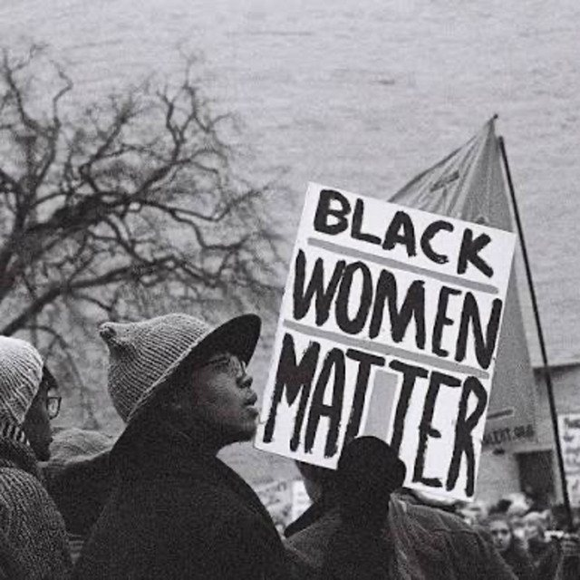
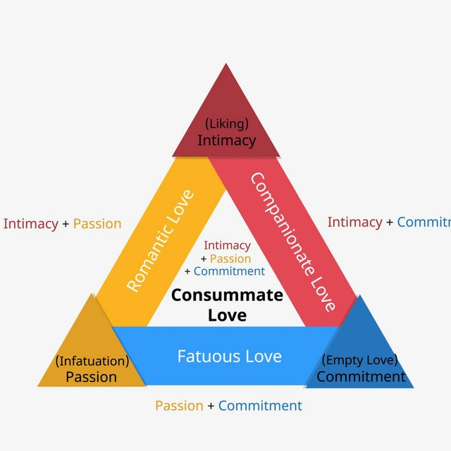
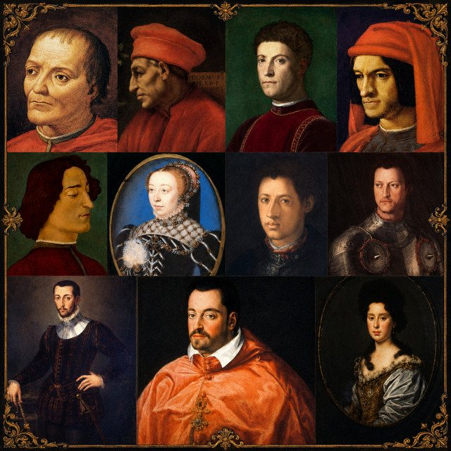

The Eclectic Polymath Podcast · Archive
#083 Black Feminism: Power, Love, and the Practice of Liberation

About this episode
Black feminism is more than a political category. It is a way of seeing power clearly, starting from lived experience, interior life, community survival, and the knowledge produced by people forced to navigate overlapping systems of oppression.
This episode looks at the Black feminist intellectual tradition from Sojourner Truth’s nineteenth-century resistance to contemporary abolitionist organizing, digital activism, independent publishing, and grassroots infrastructure. Along the way, it explores how writers and thinkers like Toni Morrison and bell hooks used literature, love, memory, and critique to expose the structures that shape Black life.
Key points
- This episode looks at the Black feminist intellectual tradition from Sojourner Truth’s nineteenth-century resistance to contemporary abolitionist organizing, digital activism, independent publishing, and grassroots infrastructure.
- Along the way, it explores how writers and thinkers like Toni Morrison and bell hooks used literature, love, memory, and critique to expose the structures that shape Black life.
- We get into the Combahee River Collective, Kitchen Table Press, Black women’s interiority, abolition, mutual aid, and the radical idea that personal experience is not secondary evidence
More like this

#078 Sternberg’s Theory of Love: Intimacy, Passion, and CommitmentJune 30, 202643:01
#063 The Medici Family: Money, Art, and Invisible RuleJune 26, 202658:31 #221 The Homestead: Who Got Set Up, Who Got StrippedOctober 18, 20261:14:22#218 Nicole Avant: Power, Marriage, and the Family WayOctober 17, 202650:31
#221 The Homestead: Who Got Set Up, Who Got StrippedOctober 18, 20261:14:22#218 Nicole Avant: Power, Marriage, and the Family WayOctober 17, 202650:31